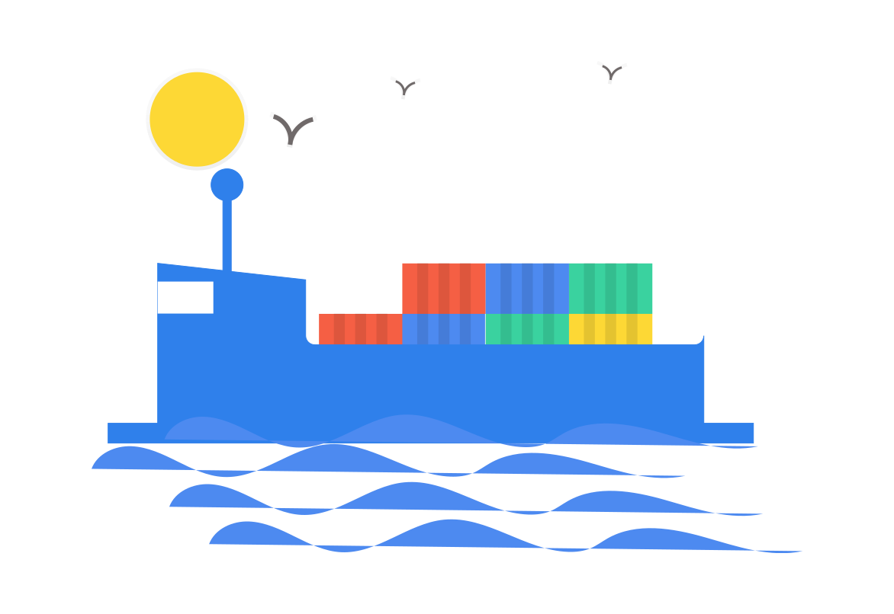
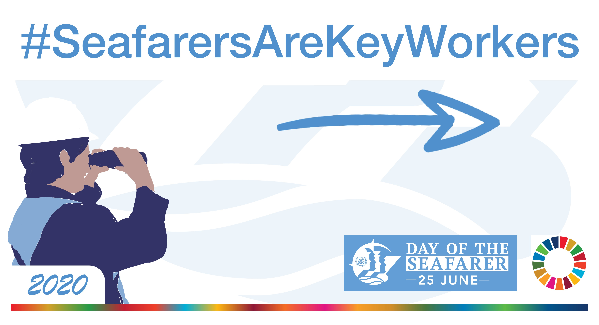
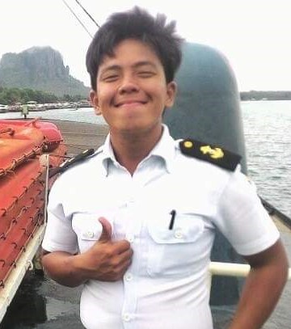

your trusted partner to find a job at sea |
JUNE 2020Welcome to the first issue of our monthly Seafair newsletter!
|
Introducing SeafairThe better crewing network Our vision at Seafair is to become the next generation of shipping crewing. Using one profile, seafarers can access thousands of openings. Likewise, shipping companies can access global talent and hire seafarers seamlessly. |
Celebrating youJune 25 was the tenth annual Day of the Seafarer Since 2010, the International Maritime Organization (IMO) has globally celebrated June 25 as Day of the Seafarer. This year, Day of the Seafarer was more relevant than ever amid a global pandemic that has left approximately 200,000 seafarers stuck at sea. Earlier in the month, Pope Francis offered encouragement and thanked seafarers for the sacrifices they have had to make and are continuing to make. The IMO estimates that more than 80% of world trade is transported by sea. Merchant vessels have continued transporting medicine, food, and other essential goods, including PPE, throughout the pandemic. However, worsening conditions restricted port access, crew changeovers, and repatriation. International organizations worked together to stop seafarers’ contract extension past June 15, and will continue supporting seafarers on their journeys home after extended time at sea. 16 million people across social media celebrated and thanked seafarers as the heroes they are through the campaign #SeafarersAreKeyWorkers this year. From everyone at Seafair: thank you for all that you do! |
Faces Of SeafairInsight from Second Engineer Mao Tze BayotasMao is a Second Engineer Officer from the Philippines. He is also an avid reader, gamer, and sightseer. Mao shared career insight and his advice for aspiring and current seafarers: love your job and be humble. When the going gets rough, take it one day at a time. Favorite food aboard: Kawali for dinner and Buko Pandan for dessert. Favorite activities at sea: Jogging in fresh sea air, reading self-help and entrepreneurship books, and watching Korean drama. |
Faces Of SeafairInsight from OS Ryan De La Cruz Bernardo For Seafarer's Day, we spoke with Ryan who is an OS from the Philippines. Ryan and his partner celebrated the day with homemade hamburgers and festivities at home this year. In the coming months, Ryan hopes to gain more sea time before becoming a deck officer. Eventually, he wants to travel to Australia and Japan and to be captain of a ship. Interesting destination: Scotland. Closest call at sea: Spotting pirate vessels. |
Opportunities from usKnow what's next and be highlighted as a Face Of SeafairI have filled out my profile. What's next?There are three components to a seafarer profile: information, prior experience, and certificates. Once your profile is complete, a representative from Seafair will reach out to help you begin phase two. Phase two is lengthy, but you only ever have to go through it once. When you complete phase two, you will be ready for hiring! Who are the Faces Of Seafair?#FacesOfSeafair is a program in which we want to feature seafarers who are part of the Seafair family. Seafarers complete a short and fun interview in which we learn about their experience, stories at sea, and wisdom for seafarers so that we can share it with both other seafarers and shipping companies. Soon it could be you! |
In the newsTrending aritime stories from this monthUnconventional shipping The role of on-vessel carriers (NVOs) and beneficial cargo owners (BCOs) during a pandemic... Read More |
View in BrowserYou were sent this message because you are part of the Seafair family. Seafair | 19 West 24th Street, 10th Floor, New York, NY 10010 |